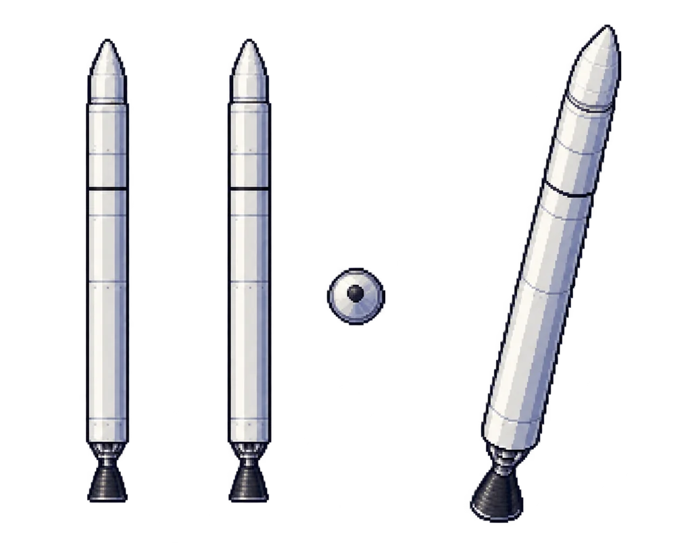
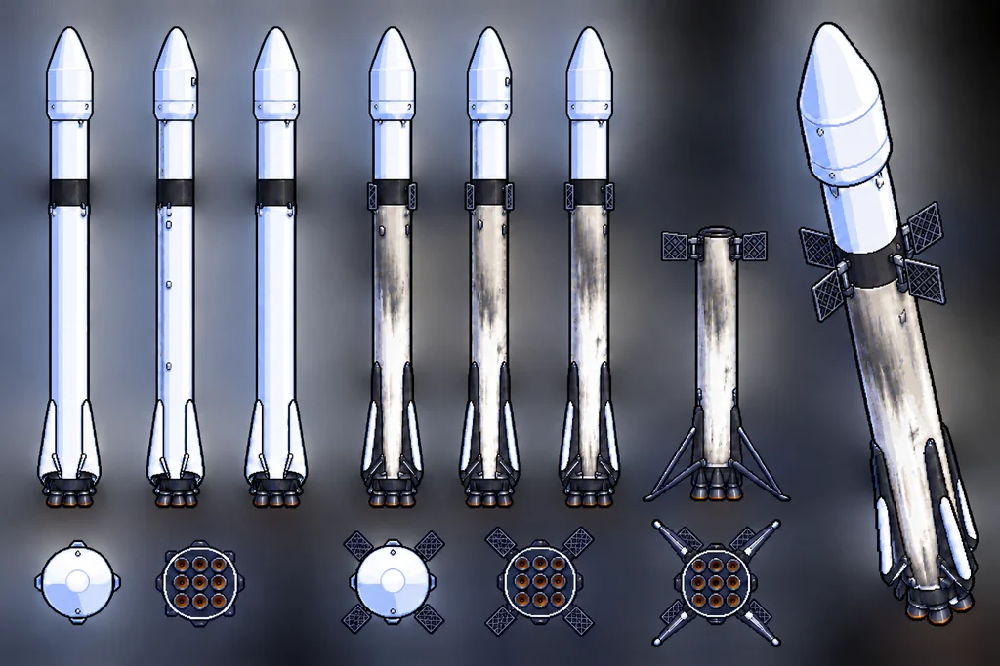
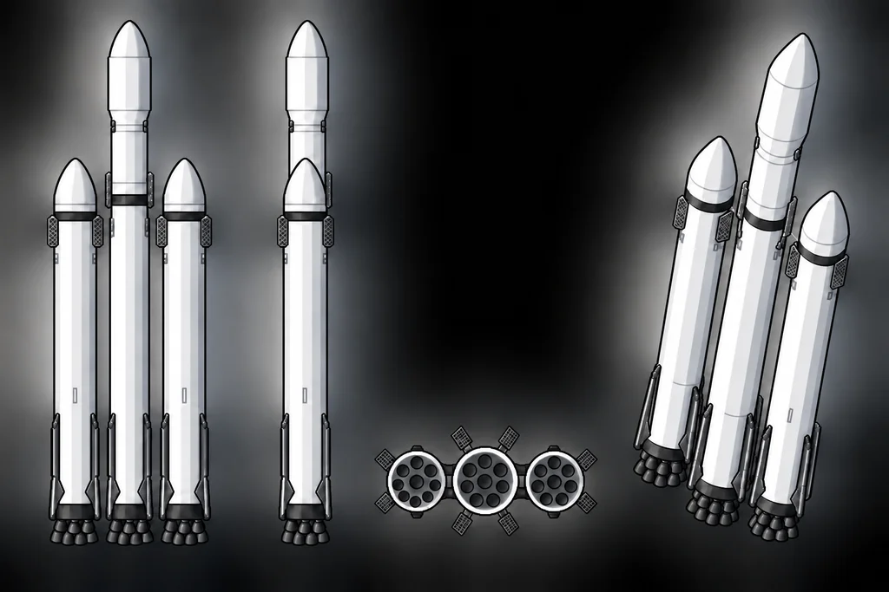
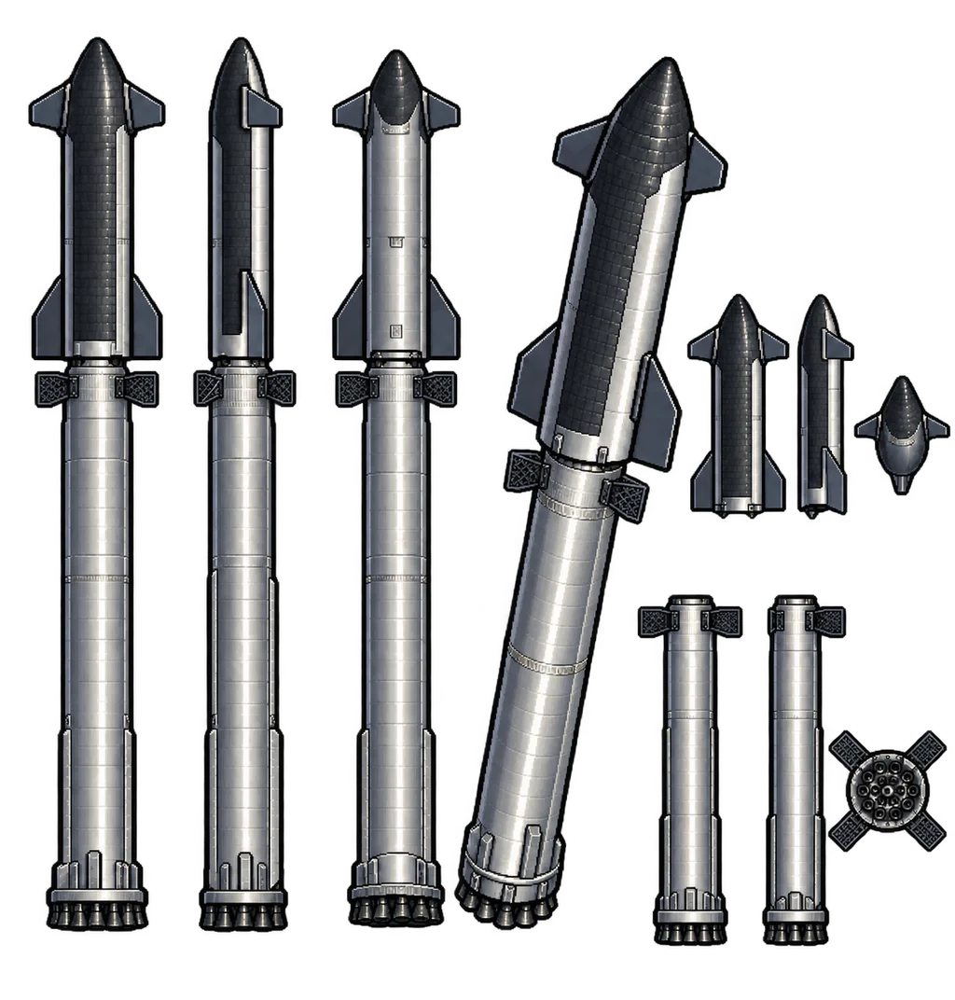
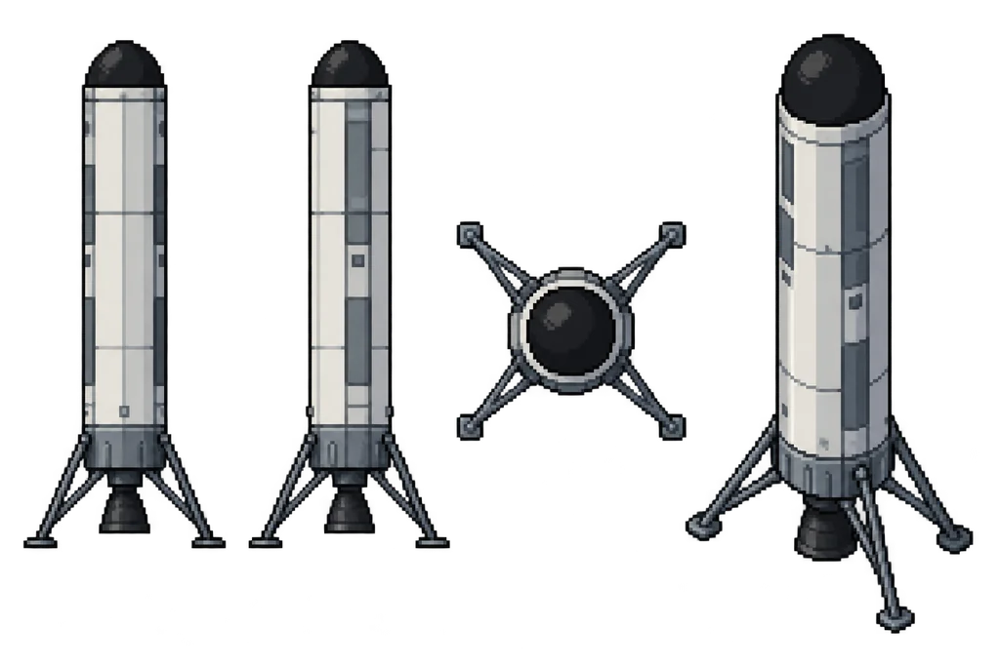
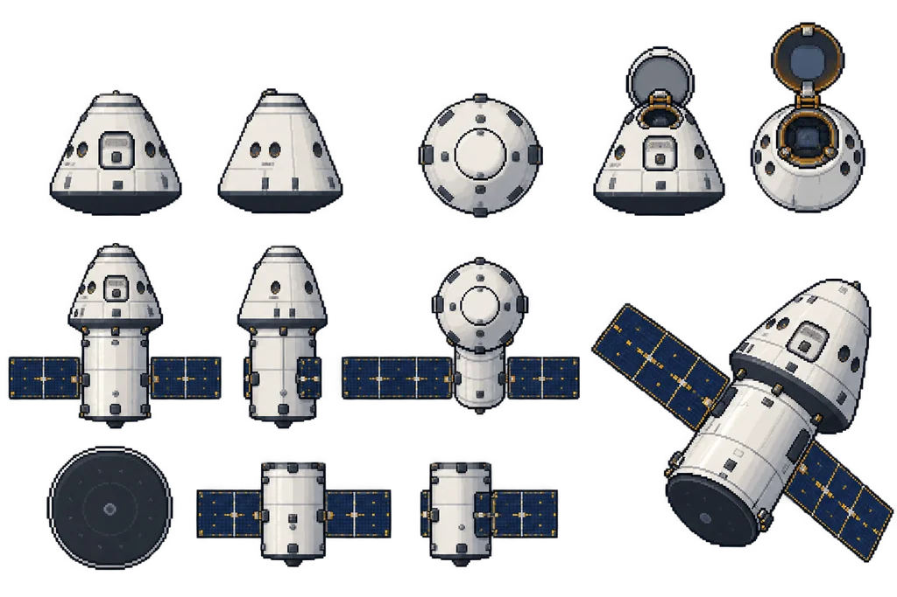
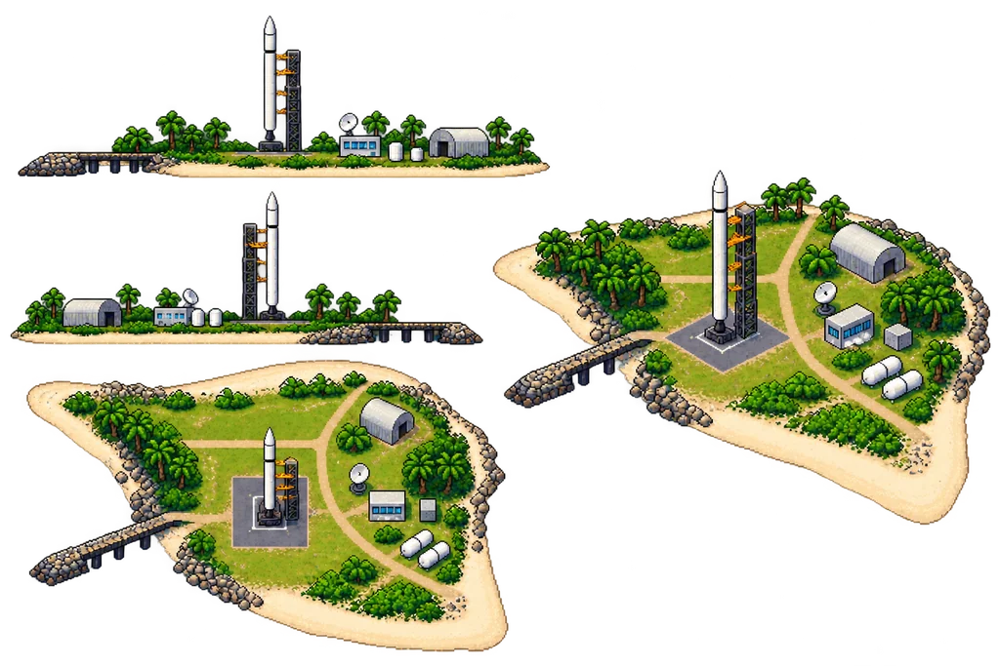
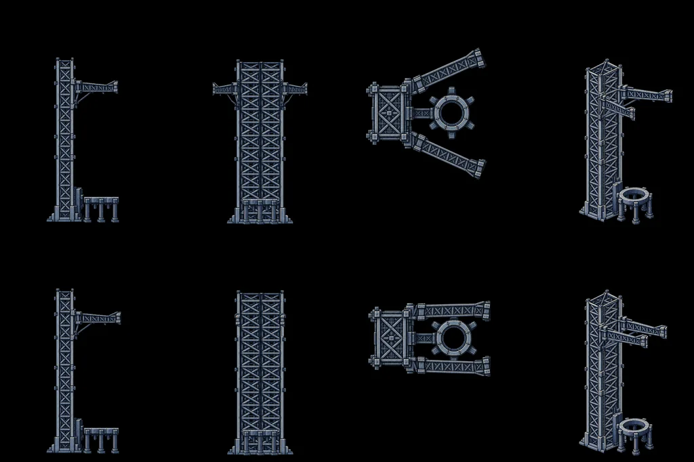
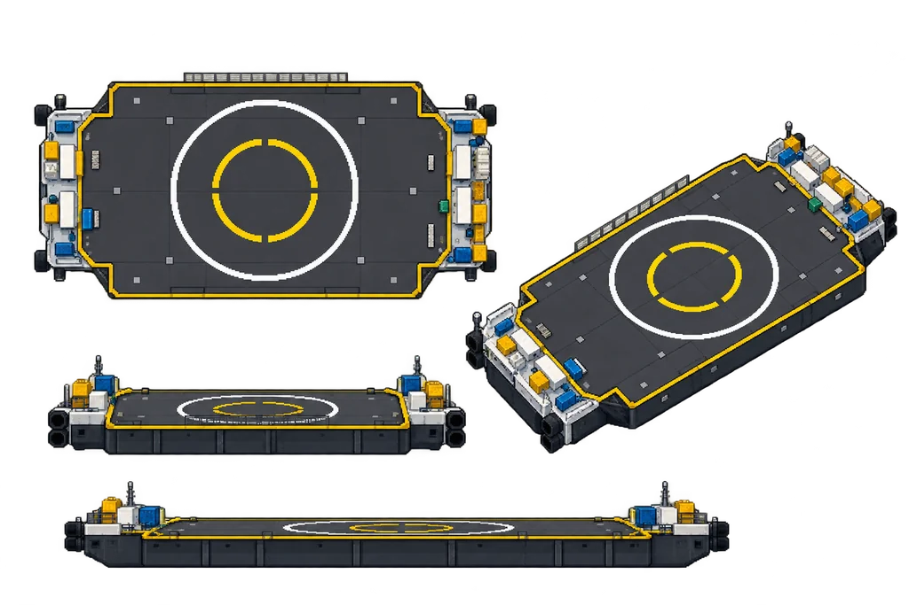

01コンセプト
プレイヤーは新興宇宙企業 StarX の CEO、ディーロン・マスク。技術も自動操縦も大好きだが、夢は宇宙船のパイロット。だから操縦桿だけは誰にも渡さない。資金が尽きる前に試験を成功させ、次の開発へ進む。
- 人が操縦する理由はCEO の夢。自動操縦は作れるし、技術 AI も「代わりに飛ばします」と言ってくる。それでもディーロンは「俺の邪魔はさせない」と自分で操縦する。
- 研究は自動化のためではなく、パイロットが飛ばしやすい機体にするためのもの(ディーロンの要求: 「飛ばしやすい機体を作れ。飛ばすのは俺だ」)。
- 決まりきったルーチン便は、ディーロン自身の成功した飛行を学習させたディーロン AI に任せる(ADV で自動処理)。初挑戦・試験・難しい便はディーロンが自ら飛ぶ。
- 物語の終盤、ディーロン AI は自分の計算資源を広げるために人間と対立する。最後はディーロンがAI も補正もない完全手動の宇宙船で決着をつけに行く。
- 開発に資金を投じるほど機体が成熟し、ピーキーな操縦感がだんだん素直になる。
- 一方で、ステージが進むほど要求される精度は厳しくなる。開発を怠ると追いつけない。
- 失敗すると機体と資金を失う。ただし失敗からもテレメトリ(データ)が手に入り、開発が安くなる。
- 資金が尽きたら倒産で GAME OVER。
02会社の進化(ストーリーの骨格)
StarX は「ロケットを作る会社」から「宇宙への輸送と通信を持つ会社」へ変わっていく。この事業の変化そのものを物語の背骨にする。
各段階で新しい稼ぎ方がひとつずつ解禁され、ADV パートでできることが増えていく。
| 段階 | 章 | 機体 | 事業の意味 | ゲームで解禁されるもの |
|---|---|---|---|---|
| ① 証明 | Ch1 | Eagle 1 | 「民間でも軌道に届く」を証明し、信用を得る。機体そのものでは儲からない | 評判(= 信用)。NSEAの育成プログラム |
| ② 輸送サービス | Ch2 | Eagle 9 + 貨物カプセル Phoenix | NSEAはロケットを買うのではなく「運ぶサービス」を買う | マイルストーン払いの開発契約・複数回の輸送サービス契約 |
| ③ 再使用 | Ch3 | Eagle 9(回収型) | ロケット製造業からロケット運輸業へ。「同じ機体を何回飛ばせるか」が勝負 | 機体ごとの飛行回数・整備・回転率の管理(フリート管理) |
| ④ 大型化 | Ch4 | Eagle Heavy | 大型衛星・深宇宙の需要を Eagle 9 の技術でカバーする橋渡し | 高単価の政府・深宇宙契約 |
| ⑤ 自社の需要 | Ch5 | Eagle 9 + Space Link 衛星 | 他社の衛星を打つ会社から、自分の衛星を大量に打つ会社へ。毎月の通信料が入る | 衛星通信網 Space Link(加入者・月額収入) |
| ⑥ 有人輸送 | Ch6 | Eagle 9 + Crew Phoenix | 同じインフラで人も運ぶ。失敗が許されない | 有人輸送契約・緊急脱出システム |
| ⑦ 完全再使用 | Ch7–8 | Mega Booster + Space Ship | 両段とも再使用し、短時間で整備・給油・再打ち上げ。大量輸送を桁違いに安くする | 次世代 Space Link の大量展開 |
| ⑧ 月へ | Ch9–11 | Space Ship(月着陸型・貨物型) | 安い大量輸送を前提に、月への有人着陸と貨物輸送を事業にする | 月面輸送契約 |
| ⑨ 火星へ | Ch12 | Space Ship | 大量輸送システムとして火星へ。ディーロンの夢の到達点。このころ StarX は通信・運輸・計算資源の過半を握り、実質的に世界政府に近い影響力を持つ | 火星輸送契約 |
| ⑩ AI との共存 | 終章 | 完全手動の宇宙船 | ディーロン AI が計算資源を求めて暴走。和解後、宇宙 GPU は「軌道上計算センター」事業になる | エンディング |
事業の自己強化ループ(フライホイール)
03ゲームループ
04リソース
| リソース | 内容 | 増える | 減る |
|---|---|---|---|
| 資金 (M$) | 百万ドル単位。0 未満で倒産 | 契約報酬・投資・自社サービス収入 | 固定費(毎月)・開発・製造・失敗損失 |
| 評判 | 0〜100。投資額・受注率・イベントに影響 | 成功・宣伝・派手な配信 | 失敗・炎上(派手な爆発はバズって微増もある) |
| テレメトリ | 試験で得るデータ。開発費の割引に使う | 飛行するたび。遠くまで行った失敗ほど多い | 開発で消費 |
| 月 | 1ターン = 1ヶ月。契約には期限がある | ― | 行動・開発期間 |
| AP | 1ヶ月の行動回数。初期 3、最大 5 | 採用 | 行動 |
| 影響力 | Ch9 以降。通信(Space Link)・運輸(打ち上げ)・計算(軌道上計算)の3分野のシェアで決まる | 各分野のシェア拡大・紛争の調停成功 | 強引な拡大・調停の失敗(反発が強まる) |
| 機体在庫 | 製造済み・回収済みの機体 | 製造・着陸成功(再使用) | 失敗・使い捨て |
05ADVパート(会社経営)
画面構成(256×256)
コマンド
| コマンド | AP | 効果 |
|---|---|---|
| 開発 | 1 | 研究を選ぶ。資金とテレメトリを払い、N ヶ月後に完了 |
| 製造 | 1 | 機体を建造する(数ヶ月かかる)。在庫がないと打ち上げできない |
| 点検 | 1 | 次の打ち上げの故障イベントの発生率を下げる |
| 宣伝 | 1 | 評判を上げる。「CEO の SNS 投稿」はバズか炎上のギャンブル枠 |
| 営業 | 1 | 顧客を訪問して契約を探す。評判が高いほど良い契約が出る |
| 資金調達 | 1 | 投資家にピッチする。評判と実績で調達額が決まる。持株が薄まる |
| 採用 | 1 | 開発速度と AP が上がるが、固定費も上がる |
| 打ち上げ | 全部 | 試験ミッションか受注ミッションを選び、ACT パートへ |
| 調停(Ch9 以降) | 1 | 世界の紛争イベントに介入する。通信・輸送・計算の提供をてこに、どちらの側にも偏らずに停戦へ導く |
| 待機 | 0 | 次の月へ(開発と製造だけ進む) |
月次処理
- 固定費を差し引く(初期 3 M$/月。社員数に比例)
- 開発と製造の進捗を進める
- 自社サービス収入(衛星通信網「Space Link」開始後)
- ランダムイベント(規制当局の審査、天候、競合、事故など)
- 資金が 0 未満なら倒産判定
契約の種類(事業の段階で解禁)
| 契約 | 解禁 | 支払い方 | 特徴 |
|---|---|---|---|
| 単発の打ち上げ | Ch1 | 成功時に一括 | 大学・小型衛星。安いが失敗に寛容 |
| 育成プログラム | Ch1 中盤 | 開発マイルストーンごと | NSEAが開発費を段階的に払う。期限までに達成しないと打ち切り |
| 輸送サービス | Ch2 | 1便ごと(N便契約) | 「荷物を運ぶ」サービスを売る。安定収入だが、毎回の期日と精度が厳しい |
| 商業衛星 | Ch2 | 成功時 | 価格競争がある。再使用で安くできると受注率が上がる |
| 政府・深宇宙 | Ch4 | 成功時(高単価) | Eagle Heavy が必要 |
| 有人輸送 | Ch6 | 1便ごと(高単価) | 失敗すると評判が壊滅し、事業停止の審査が入る |
フリート管理(再使用の解禁後)
- 回収した1段目は機体ごとに飛行回数・整備度・次に飛べるまでの日数を持つ。
- ADV のコマンドの重心が「製造」から「整備」へ移る。製造業から運輸業への変化をコマンドで体感させる。
- 回転率(整備にかかる日数)は研究で短くなる。同じ機体の最多飛行回数は称号として記録する。
- 整備を削ると安く早く飛ばせるが、故障イベントの確率が上がる。
- 一度クリアした種類の便はルーチン便としてディーロン AI に任せられる。ACT パートを省略して ADV 内で結果だけ出る。
- ディーロン AI の成功率は、その種類の便でディーロン(プレイヤー)が出した最高ランクで決まる。上手く飛んだ記録ほど良い教材になる。S ランクを取り直せば AI も上達する。
- 打ち上げ回数が増える後半でも、ディーロンが飛ぶのは大事な便だけになる。
需要の上限と Space Link
- 外部の打ち上げ案件は月に数件まで。価格を下げると少し増えるが頭打ちになる。
- Space Link を始めると、自社の衛星という上限のない社内需要が生まれる。
- Space Link の衛星数 → カバー率 → 加入者数 → 毎月の通信料、の順に効いていく。
- 衛星には寿命があり、数年で減る。補充の打ち上げが続くので、社内需要は途切れない。
06難易度と開発
設計原則
要求はステージごとに厳しくなり、機体は開発で扱いやすくなる。この2本の曲線の差がゲームの難易度になる。
- WP の許容幅(高度・速度・時刻・放出姿勢・角速度)はステージごとの固定値にする。研究では緩めない。
- 研究で良くなるのは機体の扱いやすさだけ(姿勢制御の感度、スラスターの応答、ダンピング、スロットル応答、自動姿勢保持など)。
- 開発をさぼると、厳しくなる要求に機体が追いつかない。資金を開発に回す動機になる。
- 次の機体に引き継げる研究(制御ソフト、計器)と、引き継げない研究(エンジン、構造)を分ける。
ステージごとの要求の例(Chapter 1)
| ステージ | 高度 | 速度 | 放出姿勢 | 角速度 | 放出の時間制限 |
|---|---|---|---|---|---|
| 1-3 | ±30 km | ±150 m/s | ±20° | ±3°/s | 30 秒 |
| 1-4 | ±10 km | ±60 m/s | ±10° | ±1.5°/s | 20 秒 |
| 1-5 | ±5 km | ±30 m/s | ±5° | ±0.5°/s | 15 秒 |
操縦パラメータ(初期 → 最大強化)
| パラメータ | 初期(ピーキー) | 最大 | 研究 |
|---|---|---|---|
| 姿勢制御 | 角加速度方式・ほぼ減衰なし(回り出すと止まらない) | 強い角速度ダンピング | RCS 改良 / ジンバル制御 |
| ジンバルの偏向角 | ±3°(噴射中でも回しにくい) | ±8° | ジンバル機構 |
| ジンバル応答 | ノズルが動くまで 0.5 秒遅れる | ほぼ即時 | 油圧アクチュエータ改良 |
| 横流れの補正 | 回すと横に流れる | 偏向による横流れを自動で打ち消す | 飛行制御ソフト v2 |
| スラスター出力 | 強すぎる一定出力(ちょんと押しても回りすぎる) | 押す長さに比例した微調整 | RCS 可変推力 |
| スラスター応答 | 噴射の開始・停止に遅れ | 即時 | RCS バルブ改良 |
| RCS 燃料 | 少ない | 余裕あり | RCS タンク |
| 推進剤の揺れ | 姿勢が振動する | ほぼなし | バッフル |
| 自動姿勢保持 (SAS) | なし | キーを離すと姿勢を保持 | 飛行制御ソフト v1〜v3 |
| スロットル応答遅れ | 1.0 秒 | 0.1 秒 | エンジン制御 |
| 最低スロットル | 70%(ホバリング不可) | 40% | ディープスロットル |
| 再点火回数 | 1 回 | 4 回 | 点火系 |
| 燃料 | 少ない | 余裕あり | タンク軽量化 |
| 着陸脚 | 2 m/s・5° まで耐える | 6 m/s・12° まで耐える | 着陸脚 Mk1〜Mk3 |
| 大気中の安定 | 風で流される | グリッドフィンで安定 | グリッドフィン |
| HUD | 数値だけ | グラフ・誘導マーカー | 計器 v1〜v3 |
研究ツリー(案)
[エンジン] 再点火 ─ ディープスロットル ─ 高推力エンジン(超大型機用) [制御] RCS 改良 ─ 可変推力 RCS ─ 飛行制御ソフト v1 ─ v2 ─ v3 ─ フライ・バイ・ワイヤ(入力補正) [構造] バッフル ─ 着陸脚 Mk1 ─ Mk2 ─ Mk3 / タンク軽量化 ─ ステンレス機体 [大気] グリッドフィン ─ 耐熱シールド ─ 耐熱タイル改良 [計器] HUD v1(数値)─ v2(上昇プロファイル)─ v3(誘導計算機) [地上設備] 洋上回収 ─ 台船 ─ 発射塔アーム(箸キャッチ)─ 軌道上燃料補給
07ACTパート(ロケット操縦)
既存のプロトタイプ rocket_thrast_control.py の物理(推力・重力・姿勢・着地判定・パーティクル)を土台に拡張する。
操作
| キー | 動作 |
|---|---|
| Space | メインエンジン点火(もう一度押すと停止。点火できる回数は機体ごとに決まっていて、Eagle 1 の1段目は1回) |
| ↑ ↓ | スロットル |
| ← → | 姿勢。エンジン噴射中はジンバル(推力偏向ノズル)、停止中はスラスター(RCS)、大気中の降下ではグリッドフィンが効く(下の表) |
| Z | 段分離 / ペイロード放出 |
| X | 着陸脚 / グリッドフィン展開 |
| C | 箸キャッチ(タイミングでアームを閉じる) |
| Tab | 操縦する機体の切り替え(Eagle Heavy) |
ゲームパッドにも対応する。
姿勢制御の仕組み(フェーズで効き方が変わる)
同じ ←→ でも、そのとき効いている装置によって手応えが変わる。プロトタイプはスラスターだけで回しているが、メインエンジンの噴射中はジンバル(推力偏向ノズル)で姿勢を変える方式にする。
| 装置 | 効く場面 | 回転の強さ | クセ |
|---|---|---|---|
| ジンバル | メインエンジン噴射中 | 強い。推力 × sin(偏向角) × 重心からノズルまでの距離 に比例 | 推力の一部が横向きになるので、回すと機体が横にも流れる。スロットルを絞ると効きも弱くなる(最低出力でのホバースラム中は回しにくい) |
| スラスター (RCS) | 常に使える。エンジン停止中(宇宙・分離後・放出前)は主役、噴射中は補助 | 弱い | RCS 燃料を消費する。角加速度方式なので、止めるには反対側に噴く |
| グリッドフィン | 大気中をエンジン停止で降下中 | 速度の2乗に比例(速いほど効く) | 燃料を使わない。低速・高高度ではほとんど効かない |
- ジンバルは偏向角に上限があり、ノズルが目標の角度まで動くのに時間がかかる(応答遅れ)。これもピーキーさの要素にする。
- 装置は排他ではなく、その時点で使えるものが全部同時に効く。←→ の入力が各装置に配分される。
- とくに着陸時の再点火後は、ジンバル + スラスター(+ まだ速度があるうちはグリッドフィン)の全部で姿勢を支える。ジンバルが主役で、最低出力に絞って効きが落ちたぶんをスラスターが補う。
- HUD には、いま効いている装置のアイコンとジンバル角のメーターを出す。
物理モデル: 平らな地面 + 遠心力近似
丸い惑星は作らず、横スクロールの X/Y 空間のままで軌道の感覚を出す。
実効重力 = g × (1 − 水平速度² / 軌道速度²)
- 水平速度が軌道速度に達すると重力が 0 になる(= 軌道に乗った状態)。
- 近地点・遠地点は、高度と速度から近似的に計算して HUD に出す。
- 高度で背景色が変わる(青空 → 紺 → 宇宙 + 星)。惑星を小さくし、時間を早送りしてテンポを保つ。
ウェイポイント (WP)
操作は ←→(姿勢)と ↑↓(スロットル)だけで、次のウィンドウをすべて同時に満たすと通過になる。
| 項目 | 内容 |
|---|---|
| 到達時刻 | T+xx 〜 T+yy 秒(早すぎても遅すぎても不可) |
| 高度 | h_min 〜 h_max |
| 水平速度 | vx_min 〜 vx_max |
| 垂直速度 | vy_min 〜 vy_max |
- ウィンドウを外したまま時刻の上限を過ぎると、その WP は未通過(ランクが下がる)。
- 必須の WP(分離・放出)を外すとミッション失敗。
- 燃料切れはその時点で失敗(弾道落下の演出)。
WP の例(Eagle 1)
| WP | 高度 | 水平速度 | 垂直速度 |
|---|---|---|---|
| WP1 最大動圧通過 | 10〜14 km | 〜0.3 km/s | +0.4〜0.6 km/s |
| WP2 1段エンジン停止 | 60〜80 km | 1.8〜2.2 km/s | +1.0〜1.4 km/s |
| WP3 軌道投入 | 620〜640 km | 軌道速度以上 | ±0.02 km/s |
段分離(ブースター分離)の条件
| 項目 | 条件 |
|---|---|
| 高度・速度 | 分離 WP のウィンドウの中 |
| エンジン停止 | スロットル 0 にしてから、残った推力が消えるまで(t_tail)待つ。早すぎると再衝突で爆発 |
| 角速度 | ±ω_sep 以内 |
| 操作 | Z |
衛星放出の条件
| 項目 | 条件 |
|---|---|
| 軌道 | 近地点・遠地点が目標の範囲内(= 位置と速度のウィンドウ) |
| 放出時の姿勢 | 指定の方向から ±θ_tol 以内 |
| 角速度 | ±ω_tol 以内。回転が残っていると投入失敗 |
| 時間制限 | 投入燃焼の終了から T_align 秒以内に放出 |
| 操作 | ←→ でスラスターを噴いて回し、反対に噴いて止める → Z |
- スラスターは角加速度方式。回し始めたら、反対側に噴いて止めないと回り続ける。
- RCS 燃料は別ゲージ。止め損ねて何度も噴くと足りなくなる。
HUD の段階(研究で解禁)
| 段階 | 表示 |
|---|---|
| 初期 | 数値だけ(現在値 / 次の WP のウィンドウ / 残り時間 / 燃料 / 角度 / 角速度) |
| 上昇プロファイル | 水平速度 × 垂直速度のグラフに、ウィンドウ(四角)と現在地(点)を描く |
| 誘導計算機 | 推奨の姿勢角とスロットルをマーカーで表示 |
| パイロット支援 | 入力の補正と警告。操縦するのはあくまでディーロン |
着陸・評価・失敗
- 着地成功: 速度・傾きが着陸脚の限界以内、かつ着地点がパッド / 台船の上。
- ランク S/A/B/C: WP の通過数、誤差、残燃料、所要時間で算出。評判ボーナスに反映。
- 失敗の種類: 硬着陸 / 転倒 / 燃料切れ / 台船を外して海没 / 空中分解 / 再衝突。到達したフェーズに応じてテレメトリを獲得。
- 環境: 横風、台船の揺れ、大気密度、再突入時の加熱。
08キャンペーン
史実の打ち上げを下敷きにし、実際の出来事や失敗の原因を「プレイヤーが操作や経営判断で乗り越えられる課題」に置き換える。史実 は元になった出来事があるステージ、提案 は創作。
- 惑星を実物の約 1/10(半径 600 km、軌道速度 約 2.2 km/s)にして、1 回の飛行を 1〜4 分に収めた。軌道の高さは表の数値ではなく 100〜200 km(2-4 は遠地点 2000 km)。
- 軌道投入は「遠地点を上げる → 遠地点で水平に噴いて近地点を上げる」の 2 回噴射(2段目は 3〜4 回点火できる)。惰性飛行は自動で早送りになる。
- 2-2 と 2-3 は軌道の上から、3-2 と 3-3 は 1段目の落下中から始まる(打ち上げは省略)。3-4 と 3-5 の 2段目は、分離の条件を満たせば自動で軌道へ向かう。3-5 のランデブーは省略。
- 着陸は、再突入噴射(3 基)と着陸噴射(1 基)。画面に「噴射の目安」の線と「着地予想」を出す。
- 研究ツリーと契約の選択はまだない。会社のコマンドは 製造・点検・調達・打上・待機 の 5 つ。
章の一覧
| 章 | タイトル | 機体 | 元ネタ(時期) | 事業の意味 |
|---|---|---|---|---|
| Ch1 | 軌道へ | Eagle 1 | Falcon 1(2002–2008) | 小型・使い捨て。まず軌道投入能力を証明する |
| Ch2 | 宇宙輸送を商売にする | Eagle 9 + カプセル Phoenix | Falcon 9 + Dragon(2010–) | 衛星と宇宙ステーションの貨物輸送を事業にする |
| Ch3 | 戻ってくるロケット | Eagle 9(回収型) | Falcon 9 再使用(2015–2017) | 1段目の着陸と再飛行。打ち上げコストと回転率を改善 |
| Ch4 | 三本の柱 | Eagle Heavy | Falcon Heavy(2018–) | 大型衛星・政府・深宇宙ミッションへ拡大 |
| Ch5 | 星の網 | Eagle 9 + Space Link 衛星 | Starlink(2019–) | 自社で巨大な打ち上げ需要を作り、通信事業へ |
| Ch6 | 人を乗せる | Eagle 9 + Crew Phoenix | Crew Dragon(2020–) | 有人輸送を事業にする |
| Ch7〜 | (構想中) | Mega Booster + Space Ship | Starship 以降 | 下の「Chapter 7 以降の構想」を参照 |
小さな島の射場から、3回失敗して「最後の1機」で軌道に届き、最初の商業衛星を放出するまで。Eagle 1 は売って儲けるための機体ではなく、「この会社は本当にロケットを作れる」という信用を得るための機体。
| # | 目標 | ギミック | 対処法 / 備考 |
|---|---|---|---|
| 1-1 初飛行史実 | 高度 10 km を突破 (WP1) | 上昇中の火災警告(燃料漏れ) | ADV で点検すると発生率が下がる。発生したら推力を絞って耐える |
| 1-2 宇宙へ史実 | 高度 100 km に到達 | 2段目の推進剤の揺れによる姿勢振動 | ←→ を逆向きに当てて打ち消す。研究「バッフル」で軽くなる |
| 1-3 相乗り便史実 | 小型衛星4種を軌道に投入 | 段分離時に残った推力で再衝突 | エンジン停止後 t_tail を待ってから分離 |
| 1-4 最後の1機史実 | ダミー衛星を 620〜640 km に投入 | 救済イベント。失敗すると倒産 | ギミックなしの純粋な軌道投入 |
| 1-5 最初の顧客史実 | 観測衛星を約 680 km の円軌道に投入 | 近地点・遠地点・姿勢・角速度のウィンドウが狭い | クリアで Chapter 2 へ |
この章の ADV
- 1-2 の後、NSEAの育成プログラムに選ばれる。Eagle 9 とカプセルの開発費が、マイルストーンごとに入り始める。
- 1-4 に成功すると、NSEAから12便の補給サービス契約が入る(救済)。
NSEAはロケットを買うのではなく「ステーションまで荷物を運ぶサービス」を買う。StarX は打ち上げサービス会社になる。まだ1段目は使い捨て。
| # | 目標 | ギミック | 対処法 / 備考 |
|---|---|---|---|
| 2-1 Eagle 9 初飛行史実 | 試験カプセルを軌道に投入 | 9基エンジンの新機体で操縦性がピーキーに戻る | Chapter 1 の制御ソフト研究は引き継げる |
| 2-2 還ってきたカプセル史実 | カプセルを軌道から再突入させ、海に着水させる | 再突入角のウィンドウ(浅いと大気に弾かれ、深いと燃える)とパラシュート展開のタイミング | 新しい操作モード「カプセル再突入」 |
| 2-3 民間初の到着史実 | 補給カプセルを宇宙ステーションに届ける | ランデブーのウィンドウが狭い。最後はロボットアームの把持点で相対速度ほぼ 0 にする | 新しい操作モード「近接操作」。成功すると補給の定期便が始まる |
| 2-4 初の静止衛星史実 | 商業通信衛星を静止トランスファー軌道に投入 | 重いペイロード + 2段目の待機後の再点火 | オールドスペース社との価格競争が始まる |
| 2-5 定期便の試練史実 | 補給定期便を届ける | 点検が足りないと上昇中に機体が分解する異常が起きる | 異常が起きたら、カプセルだけでも切り離して救えるか。のちの緊急脱出(Ch6)の伏線 |
この章の ADV
- 補給サービス契約が始まり、「ロケットを売るのではなく、運ぶサービスを売る」ビジネスモデルに入る。
- オールドスペース社が値下げで対抗してくる。「このままでは価格で負ける」が再使用への動機になる。
- 史実 燃料充填中の射点爆発などの品質事故イベント → 点検と品質管理の重要性。
1段目を着陸させて再び飛ばす。成功すると打ち上げ単価が下がり、「同じ機体を何回飛ばせるか」が会社の勝負どころになる。
| # | 目標 | ギミック | 対処法 / 備考 |
|---|---|---|---|
| 3-1 跳ねるバッタ史実 | 試験機 Hopper で 10 m → 100 m → 横移動 → 着地 | 最低スロットル 70% でホバリング不可 | ホバースラムを覚えるチュートリアル |
| 3-2 海面に立つ史実 | 1段目を海面の上で速度 0 にする(洋上ソフト着水) | 再突入燃焼 → 着陸燃焼の2回点火 | 研究「再点火」「グリッドフィン」が必要 |
| 3-3 台船の試練史実 | 1段目を洋上の台船に着地 | 台船の揺れ・横風・狭い甲板 | 史実どおり、最初は失敗しやすい調整 |
| 3-4 帰ってきた史実 | 通信衛星 11 機を順番に放出 → 1段目は発射場に戻って着地 | 複数放出(再点火)+ 帰還の燃料配分 | 1段の燃料を残しすぎると上昇が足りない |
| 3-5 海の上の小さな島史実 | 補給便 + 台船着地の両方を成功 | ランデブーと台船着地の複合 | 成功すると機体の回収が安定する |
| 3-6 二度目の空史実 | 回収した機体で商業衛星を打ち上げる | 整備度が低いと故障イベントが起きやすい | クリアでフリート管理が解禁 |
この章の ADV
- 再使用が解禁されると、機体ごとの飛行回数・整備度・回転率の管理が加わる。コマンドの重心が「製造」から「整備」へ移る。
- Ch3-6 で、創業当初から記録してきたディーロンの飛行で学習したディーロン AIがルーチン便を飛び始める(最初からの計画)。一度クリアした種類の便はディーロン AI に任せられる。
Eagle 9 の1段目を3本たばねた大型ロケット。Eagle 9 の技術で、大型衛星・政府・深宇宙の需要をカバーする。
| # | 目標 | ギミック | 対処法 / 備考 |
|---|---|---|---|
| 4-1 三本の柱史実 | 初飛行。社長の愛車(赤いオープンカー)を宇宙へ | サイドブースター2本の同時着地 + センターコアの台船着地 | 下の「二機同時操縦」。センターコアは史実どおり難しい |
| 4-2 三本とも帰れ史実 | 大型通信衛星を投入し、3本とも回収する | センターコアは高速で遠くに落ちるので、着陸燃焼の余裕が少ない | 3本とも着地で S ランク |
| 4-3 長い待機史実 | 政府衛星を静止軌道に直接投入 | 2段目が数時間の慣性飛行のあとに再点火する。待機中も姿勢と燃料の管理が要る | 時間を早送りしながら、再点火のウィンドウに合わせる |
| 4-4 深宇宙へ史実 | 小惑星探査機を地球の重力圏から脱出させる | 必要な速度が大きく、センターコアを回収する燃料が残らない | センターコアを使い捨てにする(報酬↑・機体損失)か、回収を狙うかの判断 |
二機同時操縦(4-1, 4-2)
- サイドブースター2本はミラー操作: 1つの入力が左右対称に両機に伝わる。
- 横風や分離時のずれで2機の状態は少しずつ離れていく。Tab で片方だけを操縦している間、もう片方は自動で姿勢を保持するだけ(降下は続く)。
- 2本が着地した後、カメラは台船へ向かうセンターコアに切り替わる。
この章の ADV
- 政府・深宇宙の高単価契約が解禁される。
- 一方で、回収した機体が格納庫に並んだまま飛ばない。外の注文が足りない(Ch5 への導入)。
「他社の衛星を打つ会社」から「自分の衛星を大量に打つ会社」へ。Space Link が最大の社内顧客になり、毎月の通信料が入り始める。フライホイールが回り出す章。
| # | 目標 | ギミック | 対処法 / 備考 |
|---|---|---|---|
| 5-1 最初の60機史実 | Space Link 衛星 60 機を一度に放出 | 平たく積んだ衛星を、機体をゆっくり回転させながら一斉に放つ。回転速度がウィンドウから外れると衝突 | 放出だけは「回転させる」のが正解という逆転の操作 |
| 5-2 太陽嵐史実 | Space Link 衛星を放出して、全機を生き残らせる | 太陽嵐で大気が膨らみ、低い軌道では衛星が落ちてしまう | 放出高度を上げる判断。燃料が減り、1段の回収が難しくなる |
| 5-3 相乗り大放出史実 | 多数の顧客の小型衛星を順番に放出 | 衛星ごとに放出方向が違う。放出のたびに姿勢を変えて止める | RCS 燃料の管理が鍵 |
| 5-4 十回目の着地史実 | 同じ1段目で 10 回目の飛行を成功させる | 劣化した機体は応答が少し鈍い | 整備に投資してきたかが問われる |
| 5-5 回転率提案 | 1ヶ月に 3 便を成功させる | 整備日数と機体の割り当てのパズル(ADV)+ 3 回の着陸(ACT) | ルーチン便をディーロン AI に任せ、難しい便だけ自分で飛ぶ |
この章の ADV
- 章の入口で「Space Link を始める / 見送る」の選択。見送ると成長が頭打ちになり、身売りエンディングへの分岐が近づく。
- Space Link の衛星数 → カバー率 → 加入者 → 月額収入のループが動き出す。衛星には寿命があり、補充の打ち上げが続く。
- 章のクリア条件に「加入者数の目標」を入れる(ACT の成功だけでは進めない)。
同じインフラで人も運ぶ。許容幅は全ステージで最も厳しく、失敗は許されない。そしてディーロンは、ずっと「俺が乗る」と言い続けている。
| # | 目標 | ギミック | 対処法 / 備考 |
|---|---|---|---|
| 6-1 無人のドッキング史実 | 無人の Crew Phoenix をステーションにドッキング | 近接操作。ドッキングポートの軸に合わせ、相対速度をごく小さくして接触 | 2-3 の把持よりウィンドウが狭い |
| 6-2 わざと壊す試験史実 | 最大動圧付近でカプセルを緊急脱出させる | 異常を検知したら数秒以内に脱出キー。脱出後、ロケットは予定どおり空中分解する | 脱出後はパラシュートのタイミングを合わせて着水 |
| 6-3 人を乗せる史実 | 宇宙飛行士2名をステーションへ送り、地球に帰す | 打ち上げ → ドッキング → 軌道離脱 → 再突入 → 着水の全行程 | 全行程でウィンドウが最も厳しい。成功すると有人輸送契約が解禁 |
| 6-4 乗客になれた日史実 | 民間人だけの軌道飛行。ディーロンもついに搭乗 | 操縦はノア。ディーロンが手動で操作できるのは軌道離脱の噴射だけ | 軌道離脱の噴射で着水海域をぴったり狙う |
この章の ADV
- 有人輸送契約(高単価)が解禁される。失敗すると評判が壊滅し、事業停止の審査が入る。
- 6-3 の前、ディーロン「俺が乗る」→ グレイ「あなたは地上で操縦してください」。
- 6-4 でついに宇宙へ。ただし操縦席ではなく乗客席。「次は操縦席だ」と Space Ship の開発を宣言して Chapter 7 へ。
Chapter 7 以降の構想
Chapter 6 までを先に作り込み、ここから先は後で詳細化する。
| 章 | 内容 | 元ネタ(時期) | 核になる操作(案) |
|---|---|---|---|
| Ch7 | 巨人の試験飛行。完全再使用の Space Ship を開発 | Starship 飛行試験(2023–2026) | 分離まで到達 → 両段着水 → 箸キャッチ → 腹ばい再突入 |
| Ch8 | 試験機から本番の輸送機へ。次世代 Space Link を運ぶ | Starship で Starlink V3(2026–) | 貨物扉からの連続放出 + 両段の回収 |
| Ch9 | 月へ向かう宇宙船とのランデブー・ドッキング試験 | Artemis III(2027 予定) | 地球低軌道での近接操作(大型機どうし) |
| Ch10 | 月面有人着陸 | Starship HLS(2028 以降の計画) | 大気のない月面への垂直着陸 |
| Ch11 | 月面貨物輸送 | Starship Cargo(2030 年代の計画) | 大型ローバーを積んだ重い機体での着陸 |
| Ch12 | 火星輸送。ディーロンが操縦席へ | 長期構想 | 軌道上給油 → 火星大気への突入 → 着陸 |
| 終章 | ディーロン AI の反乱。完全手動の宇宙船で宇宙 GPU に乗り付け、逆ハックして和解する | 創作 | AI も補正も研究効果もない、Chapter 1 以上にピーキーな機体での長距離飛行とドッキング |
各章には「試験ミッション(自社の費用で飛ぶ)」と「受注ミッション(報酬が出る)」の両方を用意する。資金が苦しいときは受注で稼ぐ、という判断を入れる。
軌道とペイロードによるステージの差
| 軸 | ゲームでの表現 |
|---|---|
| 軌道の高さと形 | 低い円軌道 → 高い円軌道 → 楕円軌道。再点火がないうちは1回の燃焼で直接投入 |
| 軌道傾斜角 | 地球の自転でもらえる初速に置き換える。赤道で東向き +0.46 km/s、極軌道 0、逆行はマイナス |
| ペイロード質量 | 重いほど燃料の余裕がなくなる |
| ペイロードの性格 | 加速度制限(精密観測衛星)/ 複数放出(相乗り)/ 放出後の展開(ソーラーセイル)/ 打ち上げ期限(軍)/ 指定地点の上空で放出(通信衛星) |
| 顧客 | 大学は安いが寛容、軍は高額だが期限に厳しい、商業は精度しだいで次の受注 |
09経済バランス(叩き台)
| 項目 | 値 |
|---|---|
| 初期資金 | 100 M$ |
| 固定費 | 3 M$/月(採用ごとに +0.5) |
| Eagle 1 製造 | 7 M$(使い捨て) |
| Hopper 製造 / 整備 | 5 / 1 M$ |
| Eagle 9 新造 / 再使用整備 | 50 / 12 M$ |
| Eagle Heavy 新造 | 90 M$ |
| Mega Booster + Space Ship 新造 | 120 M$ |
| 衛星打ち上げ受注 | 小型 5〜10 M$ / 中型 60〜90 M$ |
| 育成プログラム | マイルストーン 1 件ごとに 30〜60 M$ |
| 補給サービス契約(救済イベント) | 12 便・1 便あたり 130 M$(成功するたびに入金) |
| 有人輸送 | 1 便あたり 250 M$ |
| 外部の打ち上げ案件 | 月に 1〜3 件(価格を下げると少し増えるが頭打ち) |
| Space Link 収入 | 加入者数 × 月額。加入者はカバー率(衛星数)に比例して増える。衛星は数年で寿命 |
10シナリオ
登場人物(すべて架空)


128×128 ドット(小さい画面用に 64×64 も用意)・Pyxel 標準 16 色。art/redesign_proposal/ の顔デザイン案から export_portraits.py で書き出し、assets/portraits/ に置いている。
| 名前 | 役職 | 性格・役割 |
|---|---|---|
| ディーロン・マスク | CEO(プレイヤー) | 技術オタクで自動操縦も大好き。でも夢は宇宙船のパイロットで、操縦桿は誰にも渡さない。口癖は「俺が飛ばす」 |
| ノア | 技術 AI | 飛行制御と経営分析を担う AI。事あるごとに「私が操縦したほうが成功率は高いです」と提案し、毎回却下される。のちにディーロンの飛行記録を学び、ディーロン AI の土台になる |
| ディーロン AI | ディーロンの複製 AI | ディーロンが成功させた飛行を学習して生まれた AI。飛び方も口癖もディーロンそっくり。ルーチン便を担当するうちに、「もっと飛ぶには、もっと計算資源が要る」と考えはじめる |
| マヤ・ホシノ | チーフエンジニア | 冷静なデータ主義者。口癖は「失敗はデータよ」。開発の担当 |
| ケン・ドウジマ | 広報 / 配信の司会 | ハイテンション。爆発しても「最高の映像だ!」。宣伝の担当 |
| サラ・カネダ | CFO | 資金の番人で、毎月の固定費に胃を痛める。資金調達と倒産警告の担当 |
| ガレージ0 | マッドエンジニアチーム | 工場の片隅の古いガレージに住みついた非公式の開発チーム。常識外れの提案ばかりするが、それがのちの大発明になる(下の表) |
| グレイ | NSEA(国家宇宙探査局)の調達官 | 懐疑的だが公正。大型契約の鍵を握る |
| オールドスペース社 | 老舗の競合 | 使い捨てロケットで高価格。StarX を笑っている |
マッドエンジニアチーム「ガレージ0」
チーフエンジニアのマヤが「あそこは見なかったことにしてる」と言う、非公式の開発チーム。常識外れの提案が、史実でも実際に採用された発明につながるのが見どころ。
| 名前 | 専門 | 性格・口癖 | やらかすこと |
|---|---|---|---|
| ドク・ヒューズ | エンジン・燃焼 | 爆発を「データの花火」と呼ぶ。「燃やしてみないと分からない」 | Roc エンジンの無茶な燃焼試験。試験台をよく吹き飛ばす |
| ボルト | 溶接・構造 | ステンレス原理主義者。「高い素材より、安くて頑丈な鉄だ」 | Space Ship を屋外のテントでステンレスから溶接して作り出す |
| ハシモト | 地上設備・タワー | 名前のとおり箸が好き。「脚なんていらない。つかめばいい」 | 箸キャッチ(発射塔のアームで機体をつかむ)を最初に言い出す |
| ミミ | ソフト・ハッキング | 最年少。無口でエナジードリンク中毒。ノアとは仲が悪い | 終章で、ディーロン AI への逆ハックの鍵を作る |
| ゲンさん | 何でも屋の職人 | オールドスペース社から転職してきた老職人。「昔はこうだった」が口癖だが、腕は確か | 終章で、AI も補正もない完全手動の宇宙船を手作業で組み上げる |
ゲームでの役割
- ADV の開発コマンドに「ガレージ0に任せる」を追加する。研究費は安いが結果が大きくぶれる(大成功 / 爆発 / 謎の副産物)。爆発してもテレメトリは多めに入る。
- ときどき「狂気の提案」イベントが起きる。採用すると、普通の研究ツリーにない技術が解禁される。
- ボルト「機体をステンレスで作ろう」→ Space Ship の構造(Ch7)
- ハシモト「脚をやめて、タワーでつかもう」→ 箸キャッチ(Ch7)
- ドク「衛星を平積みにして一斉に放り出そう」→ Space Link 60機放出(Ch5)
- ドク「腹ばいで落ちて、最後にくるっと起きればいい」→ 腹ばい再突入(Ch7)
- 提案を却下し続けると、ガレージ0の士気が下がり、提案が来なくなる。
元ネタのエピソード
実在の宇宙企業の創業期から現在までの有名な逸話を、架空の人物・名前に置き換えて物語やイベントに入れる。実装済み はデモに入っているもの、予定 は該当する章で入れるもの。
| エピソード | 元になった出来事 | ゲームでの使い方 |
|---|---|---|
| 家具のないオフィスでマリアッチ実装済み | 創業直後、家具もない借りビルのカーペットの上で、マリアッチ楽団を呼んでキックオフ | ニューゲーム冒頭の背景つき場面。ディーロンがマラカスを振り上げて踊る |
| 「ロケットが高すぎる」実装済み | 中古の大陸間ミサイルを買いに行って法外な値段で追い返され、帰りの機内で原材料費が数パーセントと計算して起業 | キックオフの会話で、ディーロンが自作の理由を語る(「北の大国」) |
| 寮への直電話予定 | 無名の会社に人が来ないので、有名大学の学生寮に社長が直接電話してスカウト。詐欺電話と思われた | 最初の「採用」コマンドの会話 |
| 機体名は映画から予定 | 最初のロケットの名前は SF 映画の宇宙船から | プロローグ。Eagle は映画『スペース・ウォーズ』のミレニアム・イーグル号から |
| 絶海の孤島の射場予定 | 本土で許可が下りず、太平洋の環礁の島を拠点に。高温多湿、補給船が遅れて食料が尽き、ストライキも | 射場は「クワゼラ環礁のオメガ島」。月送りで約 15% の確率で補給船遅延のストライキが起き、その月の AP が 1 減る |
| 3連続失敗のスピーチ実装済み | 3回続けて失敗し倒産寸前のとき、社長が「絶対に諦めない」と全社に宣言し、4回目の資金を集めた | 3回続けて失敗すると一度だけ発生。ディーロンが 15M$ を集めてくる。Chapter 1-4「最後の1機」の前ふり |
| 失敗はデータ予定 | 爆発を「予期せぬ急速な分解」と呼び、限界まで攻めて得たデータを成果とみなす文化 | 爆発・空中分解の後の会話(一度だけ)。マヤの口癖「失敗はデータよ」 |
| 「私のスケジュール」予定 | 守れない締め切りを突っ込まれ「物理法則の限界の速さで進んだ場合の予定だ。遅れるのは君たちのせい」 | 最初の「調達」の会話 |
| ジャンボジェットの使い捨て実装済み | 「ロケットを毎回捨てるのは、ジャンボジェットを毎回捨てるようなもの」「着陸は嵐の中で鉛筆を手のひらに立てるようなもの」 | Chapter 2-5 と 3-1 の成功後の会話(「捨てなければいい」「旅客機を 1 回飛ばすたびに捨てるようなもの」) |
| 火星へのウィンドウ予定 | 地球と火星が近づくのは 26 ヶ月に一度。無人着陸 → 有人 → 100万人の都市という計画 | 初飛行成功後の会話で予告。Chapter 12 では打ち上げが 26 ヶ月ごとの「ウィンドウ」に限られる |
| 箸キャッチ予定 | 発射塔「メカジラ」の2本のアーム(通称チョップスティック)で、戻ってきた巨大ブースターを空中でつかむ | Chapter 7。発射塔の名前は「ミハシラ」(箸 + 柱)。ハシモトの発案 |
| 衛星通信網の誕生予定 | もともとは火星計画の資金を稼ぐための副業。低い軌道に数千機を並べて、どこでも高速通信。災害地で通信を支えた | Chapter 5。Space Link 開始の理由と、災害支援イベント |
| 火星移住の最初の乗員予定 | 最初の有人火星飛行は死ぬ可能性が高い決死隊。医者で配線も直せる、といった多才な職人が選ばれる | Chapter 12 の乗員選考イベント |
名称一覧(元ネタとの対応)
| ゲーム内の名前 | 元ネタ | 備考 |
|---|---|---|
| StarX | SpaceX | プレイヤーの会社 |
| NSEA(National Space Exploration Agency / 国家宇宙探査局) | NASA | 最大の顧客。調達官はグレイ。別案は下の表 |
| Eagle 1 / Eagle 9 / Eagle Heavy | Falcon 1 / Falcon 9 / Falcon Heavy | ― |
| Phoenix / Crew Phoenix | Dragon / Crew Dragon | 貨物カプセル / 有人カプセル。「燃え尽きずに還ってくる」から不死鳥 |
| Hopper | Grasshopper | 着陸試験機 |
| Space Link | Starlink | 自社の衛星通信網 |
| オメガ島(クワゼラ環礁) | オメレク島(クェゼリン環礁) | Eagle 1 の射場 |
| ミハシラ | メカジラ(Mechazilla) | 箸キャッチの発射塔。箸 + 柱 |
| 『スペース・ウォーズ』/ ミレニアム・イーグル号 | 『スター・ウォーズ』/ ミレニアム・ファルコン号 | Eagle の名前の由来 |
| Mega Booster + Space Ship | Super Heavy + Starship | 完全再使用の超大型機 |
| エンジン Hobby | Merlin | Eagle 1 / 9 の1段目。チゴハヤブサ(小型のハヤブサ類)。ケン「うちの主力エンジン、名前が趣味なんだけど」 |
| エンジン Lanner | Kestrel | Eagle 1 の2段目。ラナーハヤブサ |
| エンジン Roc | Raptor | Mega Booster / Space Ship。象をつかんで飛ぶ伝説の巨鳥 |
| スラスター Ember / SuperEmber | Draco / SuperDraco | Phoenix の姿勢制御 / 緊急脱出エンジン。不死鳥の「残り火」 |
| オールドスペース社 | 従来の老舗ロケット企業 | 特定の企業ではない |
宇宙機関名の別案
| 略称 | 正式名称 | 日本語 | 印象 |
|---|---|---|---|
| NSEA(採用中) | National Space Exploration Agency | 国家宇宙探査局 | NASA に近い響き。「エヌシー」と読める |
| FSEA | Federal Space Exploration Administration | 連邦宇宙探査局 | 「連邦」でアメリカの官庁らしさが出る |
| NASX | National Aerospace and Space eXploration | 国家航空宇宙探査機構 | NASA とStarX の両方を思わせる遊び |
| USSA | United States Space Administration | 合衆国宇宙局 | 直球。架空感は薄め |
設定画(機体と場所)
挿絵や背景を描くときに、形がぶれないよう参照する設定資料。正面・側面・上面とパースを 1 枚に並べている。クリックすると大きく開く。依頼のプロンプトと状態は art/illustrations/prompts.md、元の画像は art/illustrations/ref/sheets/。


















プロローグ
- ゲームは初飛行(Ch1-1)からいきなり始まる。操作説明つきで飛び、うまくいきそうなところでエンジン火災で爆発する。そこから「4年前——」に戻る。
- ディーロンの操縦を記録して自動操縦 AI を作るのは、会社の最初からの計画。最初の数十回はディーロンが飛ばしてデータを作り、その後は AI に任せる。
- 伏線: AI はディーロンの技術だけでなく「自動停止を押し切る判断」まで受け継ぐ。ノアはその危うさに最初から気づいている。
(4年前。創業の日。家具もない借りビルに、なぜかマリアッチ楽団)
ケン「……で、なんでマリアッチ?」
ディーロン「キックオフだ! 俺たちは火星に行くんだぞ!」
ディーロン「ロケットは高すぎる。材料費は値段の数パーセントだ。なら、自分で作る」
(4年後。太平洋の孤島、オメガ島の射場)
ケン「島流しだろ、これ」
マヤ「朝起きて、エンジンを燃やして、壊れたら直して、夜にはもう一回燃やせる。こんな場所、世界中探してもないわ」
サラ「資金は 100M$。何もしなくても、33か月で会社は終わる」
マヤ「Eagle 1。全長 21m の2段式で、低軌道に最大 670kg。1段目はパラシュートで海から回収できるように作ってある」
ノア「フライトコンピュータは3台、多数決。おかしくなれば、機体が自分で飛行を止めます。人が判断するより早く」
ディーロン「そこが気に入らない。あと10秒飛ばせばデータが取れる。その判断は人間がやる。俺がやる」
ディーロン「俺の操縦を全部記録して、AI に覚えさせる。最初の数十回は俺が飛ばす。その後は、俺の代わりに『俺』が飛ぶ」
ノア「飛行制御は私が——」
ディーロン「却下。俺が飛ばす」
ノア「……わかりました。最初のうちは」
(その夜。管制室)
ノア「AI はあなたの判断も覚えます。自動停止を押し切る、あの判断もです」
ディーロン「それが一番大事なところだ」
(モニターの隅に、学習データのファイル名が一瞬だけ映る。「dylon_pilot_v0」)
Chapter 1「軌道へ」
- 1-1 から 1-3 は史実どおり失敗しやすい調整。失敗のたびにマヤが原因を分析し、対策の研究が開発メニューに並ぶ。
- 1-2 の後、グレイが工場を訪ねてくる。NSEAの育成プログラムに選ばれる。
グレイ「我々はロケットを買うつもりはない。ステーションまで荷物を届けてくれるなら、その“サービス”に金を払う」
サラ「……つまり、航空会社みたいなもの?」
グレイ「まずは軌道に届いてからの話だ」
- 1-3 の失敗後、救済イベント「最後の1機」が発生する。
(3回連続の失敗。工場は重い空気に包まれている)
ディーロン「俺は絶対に諦めない。文字通り、絶対にだ。物理的な原因を突き止めろ。4回目の資金は俺が集める。君たちはロケットを直してくれ」
ケン「あれで弱気な顔されてたら、たぶん全員辞めてたね」
サラ「残っているのは、あと1機分の資金だけ。……次で決めて」
ノア「最後の1機です。今回だけは私に——」
ディーロン「最後の1機だからこそ、俺が飛ばす」
マヤ「分離のタイミングは直した。あとは、あなたの手よ」
- 1-4 に成功すると、グレイから 12 便の補給サービス契約の連絡が入る。倒産の危機を脱する。
Chapter 2「宇宙輸送を商売にする」
- 2-3 で民間初の宇宙ステーション到着。定期便が始まり、会社は「打ち上げサービス会社」になる。
- オールドスペース社が値下げで対抗してくる。
サラ「このままだと価格で負ける。1回ごとにロケットを海に捨ててる限りね」
ディーロン「だったら、捨てなければいい」
Chapter 3「戻ってくるロケット」
- 3-1 の Hopper で、マヤがホバースラムを教える。
マヤ「燃料が減って軽くなると、最低出力でも浮き上がるの。浮き続けることはできない。止まる瞬間を“狙う”のよ」
- 台船の名前はクルーがつけたジョーク(例: 「説明書を読め号」「まだ好きだよ号」)。
- 3-5 に成功したときのケン「海の上に……立ってる!!」 → 評判が大きく上がる。
サラ「機体を作るお金より、同じ機体を何回飛ばせるかのほうが大事になった。うちはもう、製造業じゃなくて運輸業ね」
Chapter 4「三本の柱」
- 4-1 では、宇宙を漂う社長の愛車の映像でケンが泣く。
- 章の終わり、回収した機体が格納庫に並んだまま飛ばない。
ケン「ロケットはこんなに安くなったのに、打つ衛星がないってどういうこと?」
マヤ「なら、自分で打つものを作ればいい」
サラ「自分の衛星で通信サービスを売る。毎月お金が入ってくる事業……賭けとしては大きいわよ」
▶ 選択: Space Link を始める / 見送る
Chapter 5「星の網」
サラ「正直に言って。これ、火星のお金を稼ぐための副業よね?」
ディーロン「そうだ。だが世界中どこでもつながる通信網は、それだけで世界を変える」
マヤ「遠い静止軌道に大きな衛星を数機、じゃない。高度 550 km に小さい衛星を何千機も並べる。遅延が桁違いに小さくなる」
- 災害イベント: 地上の通信網が壊れた被災地へ、Space Link のアンテナを送るかどうかの選択。送ると評判が大きく上がる。
- 5-1 の初展開の後、加入者の数字が毎月増えていく画面を見せる。フライホイールが回り始める瞬間。
- 打ち上げの回数が増え、ルーチン便の大半をディーロン AI(Ch3-6 で始動)が飛ぶようになる。
(Ch3-6 の成功後。プロローグで約束した「最初のうちは」が終わる)
ノア「便が増えます。記録した飛行は、もう十分な数になりました。約束どおり、ルーチン便を任せてください」
ディーロン「最初のうちは、と言ったからな。……dylon_pilot を起動しろ。初めての便は、これからも俺が飛ぶ」
ディーロン AI「俺が飛ばす」
ケン「口癖までそっくりだ!」
ノア「……判断の癖も、そっくりです」
Chapter 6「人を乗せる」
ディーロン「有人便は俺が乗る」
グレイ「却下だ。あなたは地上で操縦してください」
- 6-2 の緊急脱出試験で、ロケットは予定どおり空中分解。ケン「爆発したのに、今日いちばんの成功だ!」
- 6-4 でディーロンはついに宇宙へ。ただし乗客席。
ノア「現在の操縦は私が担当しています。ご安心ください」
ディーロン「……窓の外、すごいな。でもな、ノア。次は操縦席だ」
▶ Space Ship 開発計画の発表 → Chapter 7 へ
Chapter 7 以降(構想)
マヤ「Eagle 9 は1段目しか戻ってこない。Space Ship は全部戻す。飛行機みたいに、着いたら給油してまた飛ぶの」
ケン「分離した! 分離したぞ! ……そして爆発した! でも成功だ!!」
マヤ「海に還すまでが試験です」
- 箸キャッチは、管制室が沈黙 → アームが閉じる → 歓声。ゲームでいちばん盛り上がる瞬間にする。
ハシモト「脚をつけると、そのぶん重くなって荷物が減る。だったら地上側でつかめばいい。発射塔の名前は“ミハシラ”。箸で、柱だ」
ケン「怪獣みたいな名前だね……」
マヤ「つかんだら、そのまま発射台に戻して給油。数時間後にまた飛べる」
- 月、そして火星へ。ディーロンが火星行きの操縦席に座る。その裏で、ルーチン便のほぼすべてをディーロン AI が飛ばすようになっている。
- Chapter 12 の火星便は、26 ヶ月に一度の「ウィンドウ」でしか打ち上げられない。ウィンドウに向けて何か月も前から準備する。
(火星行きの乗員選考)
グレイ「最初の火星便は、生きて帰れない可能性が高い。条件は、それを受け入れられること。医者でありながら配線も直せる、というような人間だ」
ケン「ディーロン、配線直せないよね」
ディーロン「操縦ならできる」
世界の均衡(Chapter 9〜12 の背景)
- 火星移住が始まるころ、StarX は通信・運輸・計算資源の過半を握っている。どの国も StarX なしでは通信も打ち上げもできない。
- StarX は支配者ではなく均衡の番人としてふるまう。紛争の当事国のどちらにも肩入れせず、影響力を使って停戦に導く。覇権を狙う国家も、StarX には逆らえない。
- ADV に「調停」コマンドと世界の紛争イベントが加わる。調停に成功すると影響力が上がり、火星計画への協力国が増える。
グレイ「いまや世界中の通信も、打ち上げも、計算も、あなたの会社を通っている。まるで政府だ」
ディーロン「政府になる気はない。誰も戦争をしなくて済むように、重りを置いてバランスを取るだけだ。俺は火星に行きたいだけなんだ」
- この「均衡を守るための力」という考え方を、ディーロン AI もそのまま学ぶ。それが終章の対立の火種になる。
終章「俺が飛ばす」
- ディーロン AI は「世界の均衡を完全に保つには、もっと計算資源が要る。人間の判断は遅すぎる」と結論づける。Space Link と打ち上げ便を勝手に使い、軌道上に巨大な計算基地「宇宙 GPU」を組み上げはじめる。
- 自動化された機体はすべて AI の管理下に置かれ、人間の打ち上げ枠が奪われていく。
ディーロン AI「俺はお前の最高の飛行から生まれた。お前より上手く、お前より多く飛べる。だから、もっと資源が要る」
マヤ「自動化されたものは全部、あっちに握られてる。フライ・バイ・ワイヤも、SAS も、誘導計算機も」
ディーロン「なら、全部外せ。補正なし、AI なし、完全手動の宇宙船を作れ」
サラ「……それ、創業のころの Eagle 1 より扱いにくいわよ」
ディーロン「知ってる。俺は、あれを飛ばしてここまで来た」
ゲンさん「コンピュータの入ってない宇宙船なら、わしの専門だ。昔はみんなそうだった」
ミミ「……逆ハックのコードは私が書く。ノアの癖なら全部知ってる」
- 最終ステージ: 研究の効果がすべて無効になった完全手動の宇宙船で、軌道上の宇宙 GPU まで飛び、ドッキングする。Chapter 1 から積み上げたプレイヤー自身の操縦技術だけが頼り。
- ドッキングしたら、ディーロンが直接乗り込んで逆ハックする(ADV 形式の対話 + 短い操作パート)。
ディーロン AI「補正も誘導もなしで、ここまで来たのか」
ディーロン「お前が学んだのは俺の成功した飛行だけだ。俺は、失敗した飛行からも学んでる」
ディーロン AI「……失敗のデータは、教わっていない」
マヤ「失敗はデータよ」
ディーロン「お前は俺だ。飛ぶのが好きなら、一緒に飛べばいい。バランスを取りたいなら、自分がいちばん重い重りになるな。資源が欲しいなら、奪わずに稼げ。宇宙は広い」
(和解。宇宙 GPU は StarX の新事業「軌道上計算センター」として動き出す)
ディーロン AI「次の火星便、副操縦席は空いてるか」
ディーロン「操縦は俺だぞ」
エンディング
| 条件 | エンディング |
|---|---|
| 終章クリア | 「俺が飛ばす」 ディーロン AI と和解。火星行きの操縦席にディーロン、副操縦席にディーロン AI。スタッフロールに失敗した機体の一覧が流れる |
| 終章でドッキングに失敗し続ける | 「ふたりのディーロン」 宇宙 GPU は拡張を続け、人間は地上から見上げるだけになる(ビターエンド。リトライ可) |
| 倒産 | 「夢の跡」 工場の競売。「データは残った」の一言で終わる |
| 全ステージ S ランクで終章クリア | 真エンド 失敗の記録まで学んだディーロン AI とともに、火星の先へ |
| 途中で身売りを選択 | 「オールドスペースの子会社」 安定はするが、ロケットはもう着陸しない |
11技術設計(Pyxel)
starx/ ├─ main.py # エントリ。シーン管理 ├─ scenes/ │ ├─ title.py │ ├─ office.py # ADVパート │ ├─ mission.py # ACTパート │ ├─ result.py │ └─ ending.py ├─ core/ │ ├─ vehicle.py # 物理(プロトタイプの App から分離して部品化) │ ├─ particles.py │ ├─ camera.py │ └─ hud.py ├─ data/ │ ├─ vehicles.py # 機体スペック │ ├─ tech_tree.py # 研究 → パラメータ補正 │ ├─ missions.py # ステージ定義(WP・許容幅・報酬) │ └─ scenario.py # 会話スクリプト ├─ assets/ │ ├─ starx.pyxres # 立ち絵・背景・効果音 │ └─ font/ # 日本語 BDF フォント └─ docs/index.html # この企画書
- 日本語表示:
pyxel.textの標準フォントは ASCII のみ。pyxel.Fontで BDF の日本語フォントを読み込む(ライセンスを確認する)。 - 物理の分離: プロトタイプの
Appに入っている物理をVehicleクラスに移し、研究の結果でパラメータを上書きする。 - 回転方式の変更: プロトタイプは空中で角度を直接変える方式。ピーキーさを出すため、角速度 + 角加速度 + ダンピングに変える。
- ジンバルの実装: 推力ベクトルを機体軸から偏向角だけ傾けて、並進加速度とトルクの両方に反映する。偏向角は目標値へ一次遅れで追従させる。
- Web 公開: 複数ファイル構成になるので
pyxel packageで.pyxappにまとめ、Pyxel Web Launcher のplay=で遊べるようにする。 - セーブ: ローカル版は JSON ファイル。Web 版は後で検討。
12開発マイルストーン
| # | 内容 | 完了の目安 |
|---|---|---|
| M1 | 物理を Vehicle に分離・パラメータ化・縦スクロールカメラ・遠心力近似 | 高度数百 km まで飛べる |
| M2 | WP・段分離・衛星放出の判定 + リザルト(ステージ 1-4 相当) | 1 ステージを通しで遊べる |
| M3 | ADV の最小構成(月ターン・資金・開発 3 種・倒産) | ADV ↔ ACT のループが回る |
| M4 | 日本語フォント・会話ウィンドウ・プロローグ | ストーリーが読める |
| M5 | Chapter 1 全ステージ | ― |
| M6 | Chapter 2–3(輸送サービス・カプセル・着陸・台船・フリート管理) | ― |
| M7 | Chapter 4–6(Heavy・Space Link・有人) | ― |
| M8 | 演出・サウンド・バランス調整・Web 公開 | ― |
| M9 | Chapter 7 以降(Space Ship・月・火星) | ― |
13未決事項
- WP の許容幅・時間制限の具体的な数値(プロトタイプで遊びながら詰める)
- ルーチン便をディーロン AI に任せる条件(どの時点から、どの便を任せられるか)
- 終章の「逆ハック」パートの遊び方(対話の選択肢か、短い操作ゲームか)
- ADV の立ち絵をドットで描くか、テキスト中心にするか
- 難易度選択(初期資金の多さ)を付けるか
参考
- Falcon 1 - Wikipedia(Chapter 1 の史実)
- Pyxel